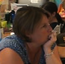
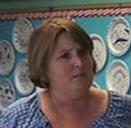
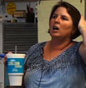

|  |  |  |
Carolyn is a fifth grade teacher with over 15 years of teaching experience at the elementary and middle school levels. Prior to participating in the Responsive Teaching Project, Carolyn's science instruction was using guided activities from district curriculum that followed a predictable pattern: think about a question, do an experiment to address the question, and read a passage to solidify the idea. "I felt my students did not think meaningfully but were rather science bystanders." Carolyn was ready to really hook her students into thinking about and truly interacting with science and the world around them.
As one of the original teachers in this project, Carolyn implemented her 5th grade Earth Science curriculum using a responsive approach and soon discovered it got her students hopping! "My students seemed to come alive when they were asked what they thought about a topic, as well as when they were asked to come up with a way to prove or disprove their thinking. Students were actually looking forward to science and would gladly work (on task) for long periods of time. For the first time, I felt like the students were truly engaged in science; it wasn't just happening around them. Because my students were making connections between their lives and the science ideas, they were able to really learn!"